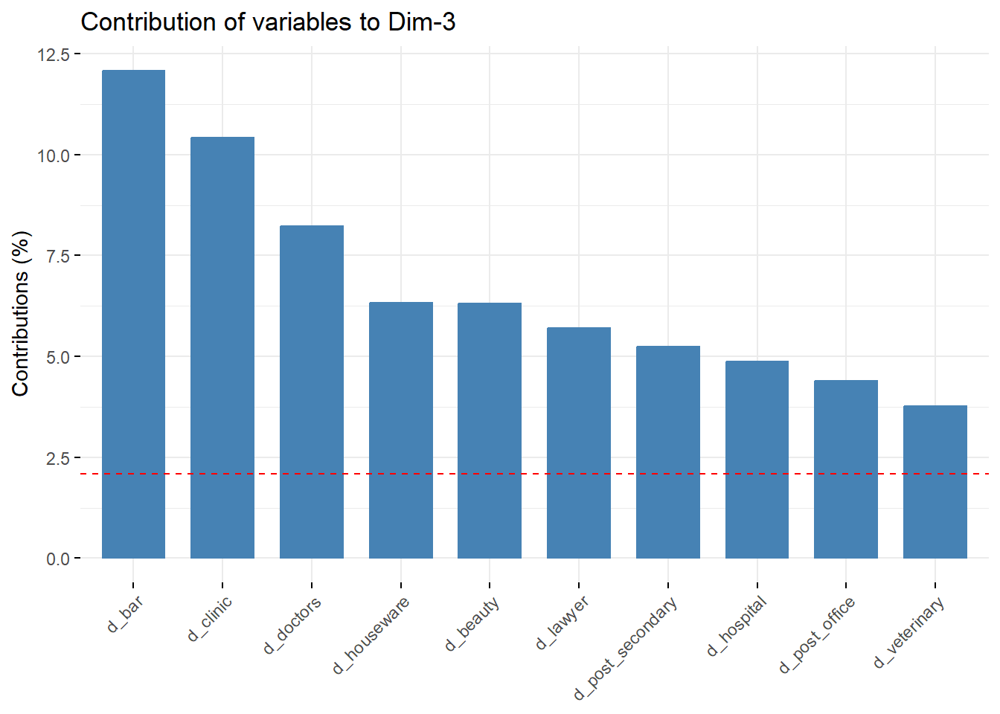

Principal Componet Analysis (PCA) is a statistical technique that simplifies complex data by reducing dimensions. PCA is like finding the main themes in a complex book. As for the crime data, there are 52 predictor variables, and it can be challenging to see the bigger picture. PCA helps us identify the most important patterns or themes in this data, making it easier to understand and act upon.
Pre-Process Data
Set Up
Similar to how we pre-processed data for kriging, we will pre-process the data. Ultimately, this step will result in two dataframes: one containing predictors and location (asb_pred) and the other for the outcome variable and location (asb_outcome).
Code
rm(list =ls())#--Install / load packagespacman::p_load(sp, sf, data.table, rio, here, leaflet, gstat, tidyverse, Metrics, scales, corrr, ggcorrplot, FactoMineR, factoextra, corrplot)#--Import street-level asb dataasb <-import(here("3_output", "asb_with_nearest_distances.csv"))#--Calculate count of crimes per location coordinateasb_count <- asb |>group_by(location.latitude, location.longitude) |>count() |>ungroup() |>inner_join(asb, by =c('location.latitude', 'location.longitude')) |>distinct(location.latitude, location.longitude, .keep_all =TRUE) |>group_by(location.latitude, location.longitude) |>mutate(location_id =cur_group_id()) |>ungroup()#--Rename columns names(asb_count)[grepl('longitude', names(asb_count))] <-'x'names(asb_count)[grepl('latitude', names(asb_count))] <-'y'#--Convert dataframe to sf object and reproject to OSGB36asb_count_sf <- asb_count |>st_as_sf(coords =c('x', 'y'), crs =4326) #--Get coordinatesasb_count_sf <- asb_count_sf |>mutate(x =st_coordinates(asb_count_sf)[, 1],y =st_coordinates(asb_count_sf)[, 2])#--Change the sf back to dfasb_count <-st_drop_geometry(asb_count_sf)#--Select only numeric columnsasb_x <- asb_count |>select(x, y, starts_with('d'))asb_y <- asb_count |>select(x, y, n)
Split Data into Test & Train Sets
Code
#--Create random indicestotal_rows <-nrow(asb_count)sample_size <-round(total_rows *0.75)set.seed(1234)random_indices <-sample(1:total_rows, sample_size, replace =FALSE)#--Create test sets using the random indicesx_train <- asb_x[dimnames(asb_x)[[1]] %in% random_indices,] |>mutate(across(where(is.numeric), ~round(.x, 2)))y_train <- asb_y[dimnames(asb_y)[[1]] %in% random_indices,]|>mutate(across(where(is.numeric), ~round(.x, 2)))#--Create training sets by excluding the indices used for the test setx_test <- asb_x[!dimnames(asb_x)[[1]] %in% random_indices,]|>mutate(across(where(is.numeric), ~round(.x, 2)))y_test <- asb_y[!dimnames(asb_y)[[1]] %in% random_indices,] |>mutate(across(where(is.numeric), ~round(.x, 2)))
Both outcome and predictor variables were split into test and train sets randomly. It is important that test sets do not learn from train sets. Hence, we will specifically create a PCA model using the train set of predictor variables, x_train.
Scree plot visualises the amount of variation explained by each principal component. Component 1 to 7 explains around 70% of total variance. Hence, we will specify 7 as the number of components to keep.
Code
#--Apply PCA again with the selected number of componentsx_train_pca <-PCA(x_train[-c(1,2)], graph =FALSE, scale.unit =TRUE, ncp =7)#--Predict x_train_pred <- FactoMineR::predict.PCA(x_train_pca, x_train[-c(1,2)])x_test_pred <- FactoMineR::predict.PCA(x_train_pca, x_test[-c(1,2)])#--Extract PCA-transformed datax_train_pred_df <-as.data.frame(x_train_pred$coord)x_test_pred_df <-as.data.frame(x_test_pred$coord)#--Add coordinates to the PCA-transformed datax_train_pred_df <-cbind(x_train_pred_df, x = x_train$x, y = x_train$y)x_test_pred_df <-cbind(x_test_pred_df, x = x_test$x, y = x_test$y)
Understand Output
Now that the predictor variables have been summarised to 7 principal components. We will try to understand what each component best represent. We can investigate how much each predictor variable contributed to the construction of a principal component by looking into cos2 value of the PCA model.
#--Dimension 1 factoextra::fviz_contrib(x_train_pca, "var", axes =1, top =10)
Distance to nearest car repair shop, electronics, money exchange and transfer, garagaes, vertinary, houseware, gas stations (fuel), liquor shop (alcohol), warehouse and laundry contributed most to the construction of first dimension. Although there is a variation in type of places, it appears that the first component primarily captures outskirts.
Code
#--Dimension 2factoextra::fviz_contrib(x_train_pca, "var", axes =2, top =10)
Main drivers of the second component were vicnity to bakery, bank, clothes, lawyer’s office, bridge, real estate agent, post-secondary institution (e.g., college or university), ATM machines, post office and convenience store. We can safely say the second dimension best represents high streets.
Code
#--Dimension 3factoextra::fviz_contrib(x_train_pca, "var", axes =3, top =10)

Distance to nearest bar, clinic, doctor’s office, houseware shop, aesthetics shop (beauty), lawyer’s office, post-secondary institution, hospital, post office and veterinary clinic was most pivotal in the formation of third dimension. Although there is a variation in the type of places, third dimension can be summarised as healthcare settings.
Code
#--Dimension 4factoextra::fviz_contrib(x_train_pca, "var", axes =4, top =10)
The fourth dimension also primarily captures urban outskirts, given considerable contribution of the nearest distance to post depot, garage, grave yard, warehouse and car wash.
Code
#--Dimension 5factoextra::fviz_contrib(x_train_pca, "var", axes =5, top =10)
Similar to Dimension 3, Dimension 5 also mainly captures proximity to health and wellness services.
Code
#--Dimension 6factoextra::fviz_contrib(x_train_pca, "var", axes =6, top =10)
Dimension 6 represents a mix of local commerce, social, and religious activities, indicating places from a well-rounded urban environment with essential services and amenities.
Code
#--Dimension 7factoextra::fviz_contrib(x_train_pca, "var", axes =7, top =10)
Finally, Dimension 7 shows a good representation of public amenities, including library, park and toilets, although it evidently has captured high street setting, given the contribution by dentist, bank, convenience store, and real estate agencies.
Code
#--Save the workspace image for conveniencesave.image("pca_workspace.RData")